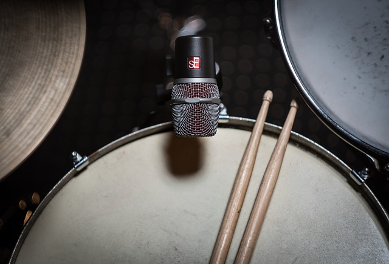

Meet the band
Vocals
Vocalist, Sam came late to the party in more ways than one. Being the last member to join the band in 2017 as well as not crafting his vocal stylings until deciding to try some new activity clubs at college.
He was soon to find that he had a natural talent and began singing in various iterations of bands throughout college. However, it wasn’t until university life began that he met with the rest of the band when competing against them in a local talent.
Suitably impressed the other members sat down with Sam for drinks and the band was born!
Rythmn guitar
Dave, having grown up with the brothers Jack and Rob, has been a prominent feature and influence throughout. Equally schooled and talented with the guitar as well as the pen the three formed a strong core of the band for many years prior to its current iteration.
School talent shows eventually led to many jam sessions with the brothers in garages and bedrooms and a great friendship was cultivated.
A pillar of the early iterations of the band, his driving rhythms would prove the cornerstone of the band's undeniable sound.
Lead guitar
Jack, like his brother Rob, began his foray into music at a young age due to parents with strong links to the music industry, and an older brother that was already honing his musical talent, it seemed inevitable that Jack would follow suit.
By age 6 he was already performing in local and school talent shows with a multitude of instruments, though the guitar was his first love.
Through his teenage years this love grew as he absorbed music from a plethora of artists, incorporating them into his arsenal and sculpting his style with his brother in various projects, leading to visceral guitar found in Beyond the Flames.
Bass guitar
The penultimate member of the band, Chris was a self taught maestro. After a friend introduced him to Led Zeppelin and the thumping bass tones of John Paul Jones whilst at college he never looked back.
Rushing out to buy his own bass guitar the next day with his savings he spent untold hours practicing to emulate his hero, quickly learning his craft.
When his father relocated due to his job Chris too relocated college and soon came into contact with the trio through their love of music. When the band’s bassist was forced to pull out, Chris’ was the first name on their lips, jumping at the opportunity and after a short trial was quickly made a permanent member.
Drums
Rob, older brother of Jack, was raised in a deeply musical family and schooled from a young age in a wide variety of instruments. Talent shows throughout his formative years deepened both his skill set and love for all instruments.
It wasn’t until Jack showed a true talent for the guitar that Rob stepped back and took up the stool full-time and his talent on the sticks blossomed too. The two would become inseparable and become true foils to each other’s musical expression.